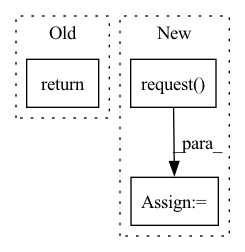

Pattern ID :9062
Before Change
def evaluate(self, weights: typing.Weights) -> Tuple[int, float]:
Evaluate the provided weights using the locally held dataset
return (1, 1.0)
After Change
def evaluate(self, weights: typing.Weights) -> Tuple[int, float]:
Evaluate the provided weights using the locally held dataset
evaluate_msg = serde.server_evaluate_to_proto(weights)
client_msg: ClientMessage = self.bridge.request(
ServerMessage(evaluate=evaluate_msg)
)
num_examples, loss = serde.client_evaluate_from_proto(client_msg.evaluate)
return num_examples, loss
In pattern: SUPERPATTERN
Frequency: 4
Non-data size: 3
Instances Fragment ID: 32955152
Project Name: adap/flower
Commit Name: c58477bcc7e25f1059999d07d315619d7ff3cf80
Time: 2020-02-28
Author: taner@adap.com
File Name: src/flower/grpc_server/grpc_proxy_client.py
M Class Name: GRPCProxyClient
N Class Name: GRPCProxyClient
M Method Name: evaluate(2)
N Method Name: evaluate(2)
M Parent Class: Client
N Parent Class: Client
M File Name: src/flower/grpc_server/grpc_proxy_client.py
N File Name: src/flower/grpc_server/grpc_proxy_client.py
M Start Line: 59
M End Line: 59
N Start Line: 53
N End Line: 58
Before Change
raise Runtime400Exception(
f"{self._kind.title()} creation failed: {r.json()}"
)
return r.json()
except requests.exceptions.RequestException as ex:
self._logger.error(f"{ex!r}")
raise Runtime400Exception(After Change
:return: response from mini-jinad
self._logger.debug(f"sending POST request to mini-jinad on {uri}/{self._kind}")
async with aiohttp.request(
method="POST", url=f"{uri}/{self._kind}", json=params
) as response:
response_json = await response.json()
if response.status != HTTPStatus.CREATED:
raise Runtime400Exception(
f"{self._kind.title()} creation failed: {response_json}" Fragment ID: 32955149
Project Name: jina-ai/jina
Commit Name: 5082c49ebcf70b070f96682b7e1766c17822253b
Time: 2021-07-15
Author: deepankar.mahapatro@jina.ai
File Name: daemon/stores/peas.py
M Class Name: PeaStore
N Class Name: PeaStore
M Method Name: _add(3)
N Method Name: _add(1)
M Parent Class: ContainerStore
N Parent Class: ContainerStore
M File Name: daemon/stores/peas.py
N File Name: daemon/stores/peas.py
M Start Line: 12
M End Line: 29
N Start Line: 17
N End Line: 37
Before Change
def get_weights(self) -> typing.Weights:
Return the current local model weights
return []
def fit(self, weights: typing.Weights) -> Tuple[typing.Weights, int]:
Refine the provided weights using the locally held dataset.After Change
def get_weights(self) -> typing.Weights:
Return the current local model weights
get_weights_msg = serde.server_get_weights_to_proto()
client_msg: ClientMessage = self.bridge.request(
ServerMessage(get_weights=get_weights_msg)
)
weights = serde.client_get_weights_from_proto(client_msg.get_weights)
return weights
def fit(self, weights: typing.Weights) -> Tuple[typing.Weights, int]: Fragment ID: 32955146
Project Name: adap/flower
Commit Name: c58477bcc7e25f1059999d07d315619d7ff3cf80
Time: 2020-02-28
Author: taner@adap.com
File Name: src/flower/grpc_server/grpc_proxy_client.py
M Class Name: GRPCProxyClient
N Class Name: GRPCProxyClient
M Method Name: get_weights(1)
N Method Name: get_weights(1)
M Parent Class: Client
N Parent Class: Client
M File Name: src/flower/grpc_server/grpc_proxy_client.py
N File Name: src/flower/grpc_server/grpc_proxy_client.py
M Start Line: 37
M End Line: 37
N Start Line: 37
N End Line: 42
Before Change
raise Runtime400Exception(
f"{self._kind.title()} creation failed \n{"".join(r.json()["body"])}"
)
return r.json()
except requests.exceptions.RequestException as ex:
self._logger.error(f"{ex!r}")
raise Runtime400Exception(After Change
:return: response from mini-jinad
self._logger.debug(f"sending POST request to mini-jinad on {uri}/{self._kind}")
async with aiohttp.request(
method="POST",
url=f"{uri}/{self._kind}",
params={"port_expose": str(port_expose)},
json=params,
) as response:
response_json = await response.json()
if response.status != HTTPStatus.CREATED:
raise Runtime400Exception(
f"{self._kind.title()} creation failed: {response_json}" Fragment ID: 32955147
Project Name: jina-ai/jina
Commit Name: 5082c49ebcf70b070f96682b7e1766c17822253b
Time: 2021-07-15
Author: deepankar.mahapatro@jina.ai
File Name: daemon/stores/flows.py
M Class Name: FlowStore
N Class Name: FlowStore
M Method Name: _add(4)
N Method Name: _add(2)
M Parent Class: ContainerStore
N Parent Class: ContainerStore
M File Name: daemon/stores/flows.py
N File Name: daemon/stores/flows.py
M Start Line: 24
M End Line: 41
N Start Line: 17
N End Line: 40